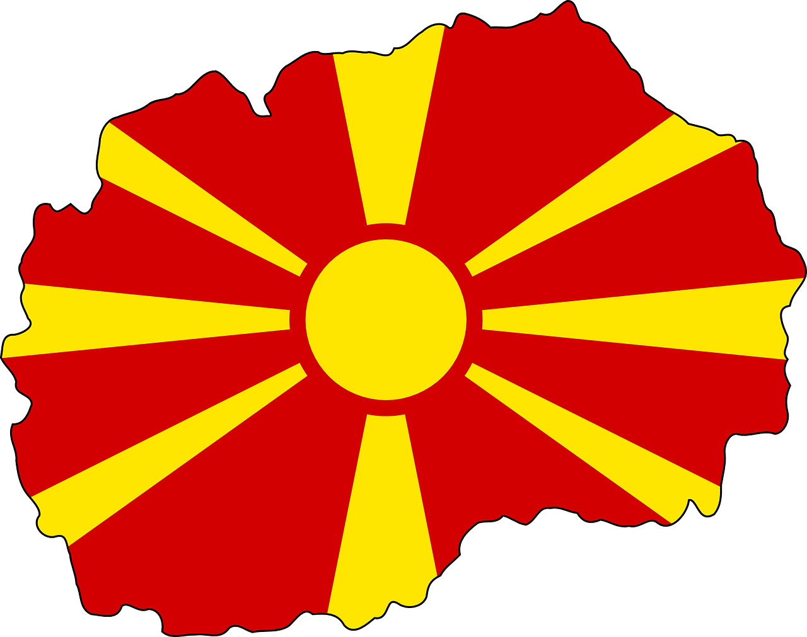

Природа
| Горите и структурата на горите представляват един от най-значимите природни потенциали на община Крива паланка. Горите заемат 36,47% от общата площ на общината. Горите са 17 527,5 хектара, което представлява 0,54% от горите в страната. Около 60% от общата залесена площ са високи гори, а останалата част са ниски гори. Най-разпространена е буковата гора, която се простира от 700 до 1200 м надморска височина. | ||
| Животинският фонд на Осоговията се състои основно от: вълк, лисица, заек, сърна, дива свиня, таралеж, костенурка. По-слабо застъпени са: язовецът, белката (куницата) и видрата. Последната мечка според записите е убита през 1891 г. От влечугите постепенно се появяват гущери и змии (водни и сухоземни), от птиците голям брой са сойката, славеят, врабчето, кукувицата, патицата, гарванът и ястребът по високите върхове, соколът и орелът. | ||
| Флората на Осоговията е богата и разнообразна. големите разлики във височината обуславят формирането на четири растителни пояса. | ||
| Община Крива Паланка има умерено-континентален климат с умерено студена зима, умерено горещо лято, свежа пролет и сравнително топла есен, което се дължи на географското разположение и някои влияния, които навлизат от Беломорието през Крива Река. По-високите части на Осоговия са повлияни от степния климат. Осоговията е богата на извори, потоци и реки. Това богатство се дължи на относително голямата му надморска височина и геоложки състав. Регионът се характеризира с множество плитки реки и малки басейни. Най-известните са Крива река и Дурачка река.Крива река извира в подножието на Царев връв от силен извор на около 1800 метра надморска височина. | Осоговската планинска верига е сред най-важните рудни райони в Република Македония. В района на община Крива паланка има няколко рудни находища на метали (олово, цинк, антимон, мед, сребро, злато и др.), както и на неметали (бентонитови глини, туфи, кварц, диатомит и др.) | |